Économie régionale · 2013 · Arc jurassien franco-suisse
Swiss Knowhow – Arc jurassien 2013
Numéro de juillet 2013 du magazine Swiss Knowhow consacré à l'Arc jurassien, région à cheval sur les cantons de Berne, Vaud, Neuchâtel et Jura et liée à la Franche-Comté par une communauté de destin. Il donne la parole aux acteurs institutionnels du développement régional et transfrontalier (arcjurassien.ch, RVAJ, CTJ, OSTAJ, Minnovarc, Parc du Doubs), à des conseillers d'État, maires et syndics de Berne, Bienne, La Chaux-de-Fonds, Yverdon-les-Bains, Sainte-Croix ou Pontarlier. La seconde partie réunit des publireportages bilingues d'entreprises de la région, de l'horlogerie et de la microtechnique à l'ingénierie, la construction, l'énergie et la santé. Édité par COM Consulting SA à La Chaux-de-Fonds.
Sommaire · 53 articles
 Interview
Interviewarcjurassien.ch – Au centre du dialogue et des projets
Interview de Madame Mireille Gasser, secrétaire générale d'arcjurassien.ch
 Interview
InterviewL'Arc jurassien, une vue de l'esprit ?
Pierre-Alain Rumley en toute franchise – Interview du professeur d'aménagement du territoire et d'urbanisme à l'Université de Neuchâtel
 Interview
Interview« Les différences sont moins importantes que les ressemblances »
Interview de Monsieur Pascal Broulis, président volontariste d'arcjurassien.ch
 Interview
InterviewNeuchâtel, au cœur de l'Arc jurassien – Trois axes de développement
Interview avec Monsieur Thierry Grosjean, chef du Département de l'économie canton de Neuchâtel
 Interview
InterviewLe canton du Jura dans l'Arc jurassien – Une fenêtre ouverte sur Bâle
Interview de Madame Elisabeth Baume-Schneider, Ministre jurassienne de la Formation, de la Culture et des Sports
 Interview
InterviewLe canton de Berne, acteur à part entière – « Ce n'est pas la surface qui compte »
Interview avec Monsieur Philippe Perrenoud, conseiller d'État bernois francophone
 Interview
InterviewL'Arc jurassien, terre promise ?
Les convictions de Laurent Kurth – Interview avec Monsieur Laurent Kurth, conseiller d'État neuchâtelois
 Interview
InterviewBienne, prospère et dynamique – Au carrefour des langues et des régions
Interview de Monsieur Erich Fehr, maire de la ville de Bienne
 Interview
Interview« Viendra un jour où la frontière n'existera plus dans nos têtes »
Commune de Sainte-Croix – Interview avec Monsieur Franklin Thévenaz, Syndic de Sainte-Croix
 Interview
InterviewVers une société à 2000 watts – Un projet des villes pour l'Arc jurassien
Interview de Monsieur Pierre Brulhart, conseiller communal à Delémont (directeur du Département de l'énergie et des eaux)
 Interview
InterviewLes communes, moteur de la coopération transfrontalière
Interview de M. Patrick Genre, Maire de Pontarlier
 Interview
InterviewMinnovarc en quête d'innovation – Des microtechniques pour demain
Interview avec Monsieur Pierre Rossel, chef de projet de Minnovarc – Innovation franco-suisse dans les microtechniques
 Interview
InterviewDans le miroir des statistiques – Un observatoire transfrontalier
Interview de Monsieur Gérard Geiser, chef du Service de statistique du canton de Neuchâtel, qui coordonne les activités de l'OSTAJ du côté suisse
 Interview
InterviewUn parc transfrontalier pour une communauté de destin
Interview de Mme Anne Girardet, Chargée de mission transfrontalière pour le Pays Horloger et le Parc naturel régional du Doubs

Atelier für Direkte Demokratie St Ursanne – «Der Jura – eine geniale Region!»
Interview mit Andreas Gross, Leiter des Ateliers für Direkte Demokratie / « Le Jura : une région qui a du génie ! »
 Interview
InterviewNeuchâtel, un pôle de formation – Mieux orienter les jeunes
Interview avec Monsieur Philippe Gnaegi, directeur du Département de l'Éducation, de la Culture et des Sports (DECS)
 Interview
InterviewStandortförderung Kanton Bern
Interview mit Denis Grisel, Leiter der Standortförderung des Kantons Bern (SF BE)
 Interview
InterviewLa promotion économique neuchâteloise – L'Arc jurassien en tant que creuset d'innovation
Interview de Monsieur Alain Barbal, directeur de la promotion économique du canton de Neuchâtel (DEN Sàrl)

Stadt Bern – «Politik ist die Kunst, zur richtigen Zeit die richtigen Rahmenbedingungen zu setzen»
Interview mit Alexander Tschäppät, Stadtpräsident von Bern / « La politique est l'art de réunir les bonnes conditions au moment idoine »
 Interview
InterviewTiefbauamt der Stadt Bern – «Wir bewirtschaften den öffentlichen Raum»
Interview mit Hans-Peter Wyss, Stadtingenieur Bern / Office des ponts et chaussées de la ville de Berne – « Nous gérons l'espace public »
 Interview
InterviewStadt Bern – Interview mit Martin Baumann, Stadtbauinspektor der Stadt Bern
Bauinspektorat: Baubewilligungen, Baupolizei und Wohnraumschutz
 Interview
InterviewDes problématiques et des ambitions communes
Interview de M. Daniel von Siebenthal, Syndic d'Yverdon-les-Bains

Wirtschaftsraum Bern – «Beispielhaftes Zusammenwirken von Stadt und Land»
Interview mit Hans-Jürg Gerber, Leiter Wirtschaftsraum Bern / « Une synergie exemplaire entre ruralité et urbanité »
Stadt Biel
Interview mit Thomas Gfeller, Delegierter für Wirtschaft Stadt Biel
 Interview
InterviewLa coopération transfrontalière, une évidence
Interview de M. Etienne Roy, Préfet du Jura-Nord vaudois
 Interview
InterviewWirtschaftskammer Biel-Seeland (WIBS) – «Vernetzen. Beleben. Unterstützen. In Biel und im Seeland.»
Interview mit Esther Thahabi, Geschäftsführerin WIBS
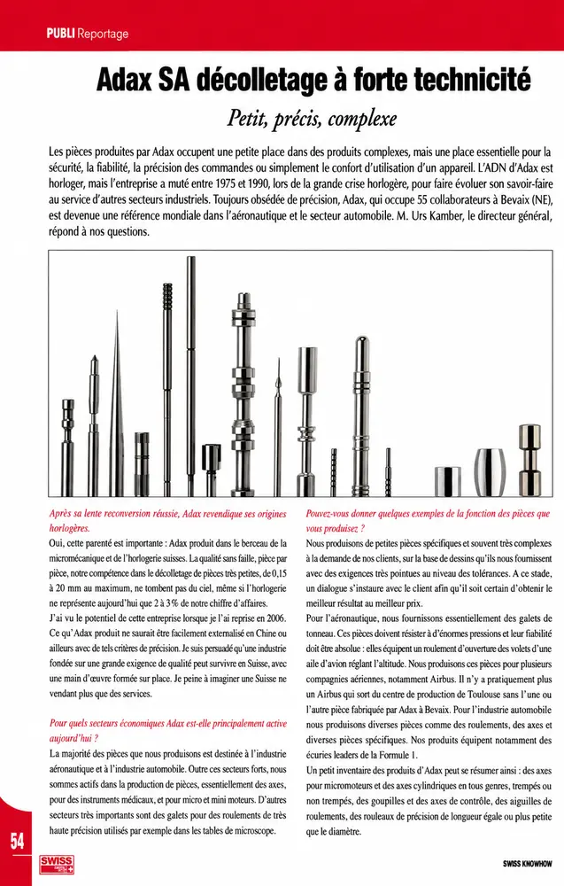
PublireportageAdax SA décolletage à forte technicité – Petit, précis, complexe
Entretien avec M. Urs Kamber, directeur général
 Publireportage
PublireportageAnnax Schweiz AG
Interview mit Martin Jaeggi, Unternehmensleiter / Annax Suisse S.A. – Entretien avec Martin Jaeggi, directeur de l'entreprise
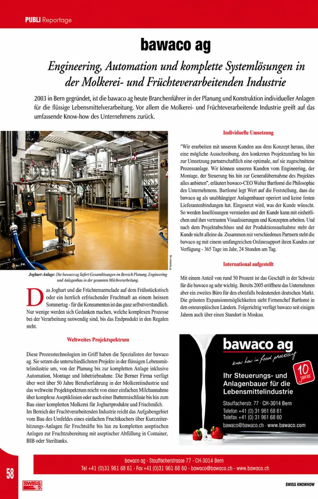
Publireportagebawaco ag – Engineering, Automation und komplette Systemlösungen in der Molkerei- und Früchteverarbeitenden Industrie
Ingénierie, automatisation et solutions systèmes complètes pour les industries laitière et de transformation des fruits
 Publireportage
PublireportageCendres+Métaux – Le savoir-faire au cœur de la matière
Horlogerie et bijouterie, médical et dentaire, refining
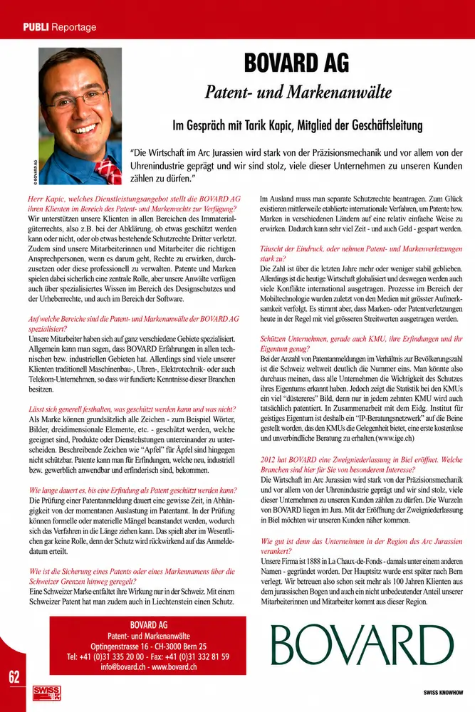
PublireportageBovard AG – Patent- und Markenanwälte
Im Gespräch mit Tarik Kapic, Mitglied der Geschäftsleitung / Bovard SA – Conseils en brevets et en marques
 Publireportage
PublireportageNeroxis – Pour la préservation de l'environnement
Neroxis – Protecting the environment
 Publireportage
PublireportageManufacture Cartier Horlogerie La Chaux-de-Fonds
Interview avec Jean-Kley Tulli, Directeur Manufacture Cartier Horlogerie
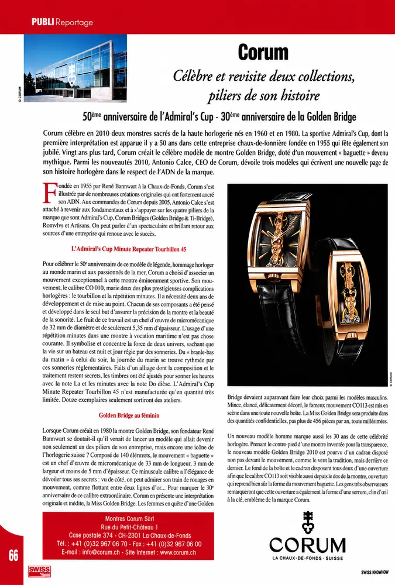
PublireportageCorum – Célèbre et revisite deux collections, piliers de son histoire
50e anniversaire de l'Admiral's Cup – 30e anniversaire de la Golden Bridge

Emch+Berger AG Bern – Gesamtlösungen in den Bereichen Bau, Umwelt, Mobilität und Energie
Interview mit Kurt E. Wagner, VR-Delegierter und CEO, und Mirko Feller, Stv. CEO / Solutions globales dans les domaines de la construction, de l'environnement, de la mobilité et de l'énergie
 Publireportage
PublireportageEnergie Service Biel/Bienne (ESB) – Energie für die Stadt Biel und die Region Seeland
Interview mit Heinz Binggeli, Direktor ESB / De l'énergie pour la ville de Bienne et la région du Seeland
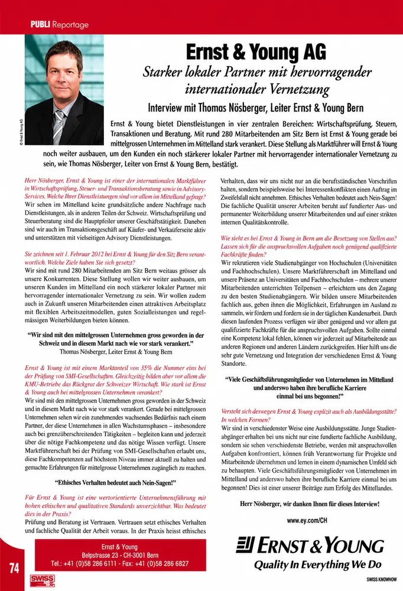
PublireportageErnst & Young AG – Starker lokaler Partner mit hervorragender internationaler Vernetzung
Interview mit Thomas Nösberger, Leiter Ernst & Young Bern / Un partenaire local fort avec un réseau international d'exception
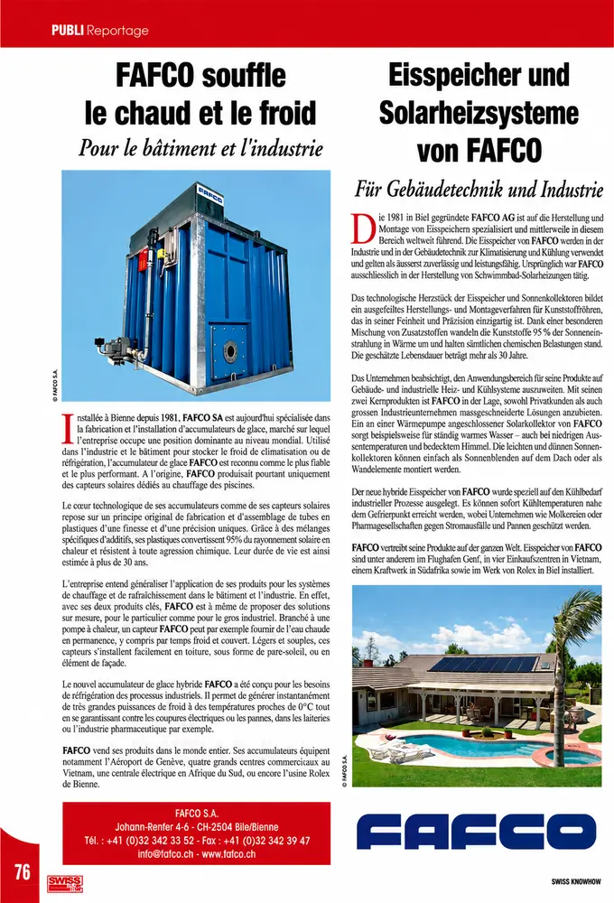
PublireportageFafco souffle le chaud et le froid – Pour le bâtiment et l'industrie
Eisspeicher und Solarheizsysteme von Fafco – Für Gebäudetechnik und Industrie
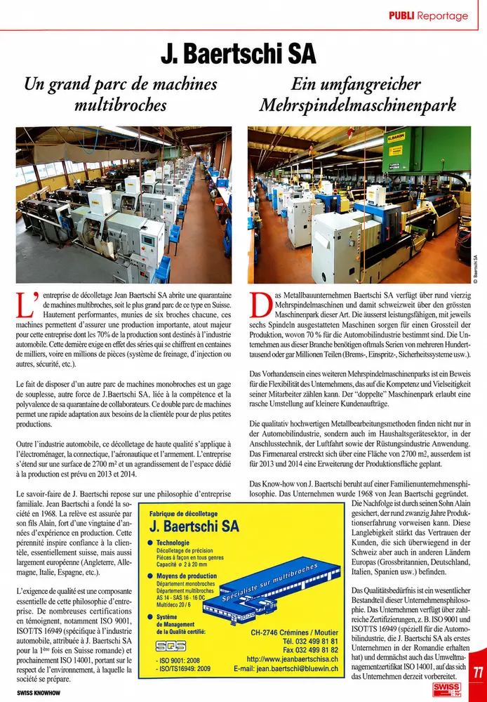
PublireportageJ. Baertschi SA – Un grand parc de machines multibroches
Ein umfangreicher Mehrspindelmaschinenpark
 Publireportage
PublireportageFondation Bartimée
Traitement, réinsertion sociale et professionnelle des personnes dépendantes
Geotest AG, Zollikofen
Geschäftsleitung: R. Brinkmann, Dr. Ch. Meyer / Geotest SA – Géologie, géotechnique, géophysique, environnement
 Publireportage
PublireportageHôpital du Jura bernois SA – Proximité et qualité
Hôpital du Jura bernois SA – Nähe und Qualität
HRS Real Estate AG
Im Gespräch mit Martin Kull, VR-Delegierter, CEO und Inhaber / Entretien avec Martin Kull, délégué du conseil d'administration, CEO et propriétaire

Itten+Brechbühl AG – Architekten und Generalplaner
Fragen an Herrn Christoph Arpagaus, Vorsitzender der Geschäftsleitung / Itten+Brechbühl SA – Architectes et planification générale
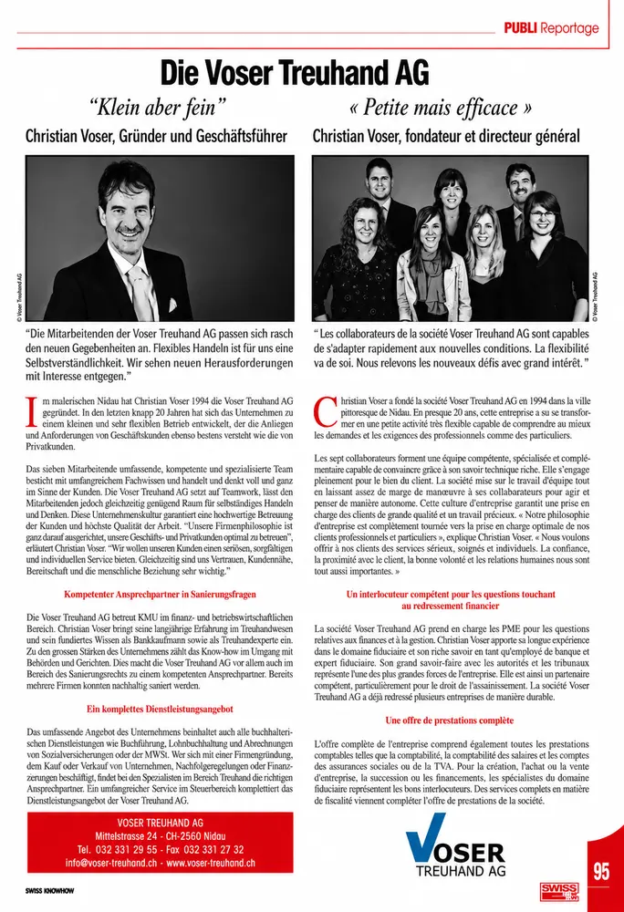
PublireportageDie Voser Treuhand AG – «Klein aber fein»
Christian Voser, Gründer und Geschäftsführer / « Petite mais efficace »

L. Klein AG, Biel – Edelstähle und Metalle für Kunden in der ganzen Welt
Interview mit Olivier und Philippe Schiess, Geschäftsleiter / Aciers fins et métaux pour nos clients du monde entier
Meyer Sintermetall AG, Studen – Wenn bei Formteilen Qualität, Präzision und Wirtschaftlichkeit zählt
Interview mit Christoph Meyer, Direktor / L'importance de la qualité, de la précision et de la rentabilité dans le domaine des pièces moulées

NMS Bern – «Bei uns stehen die Lernenden im Zentrum»
Interview mit Annette Geissbühler, Direktorin NMS / « L'élève est au centre de nos préoccupations »
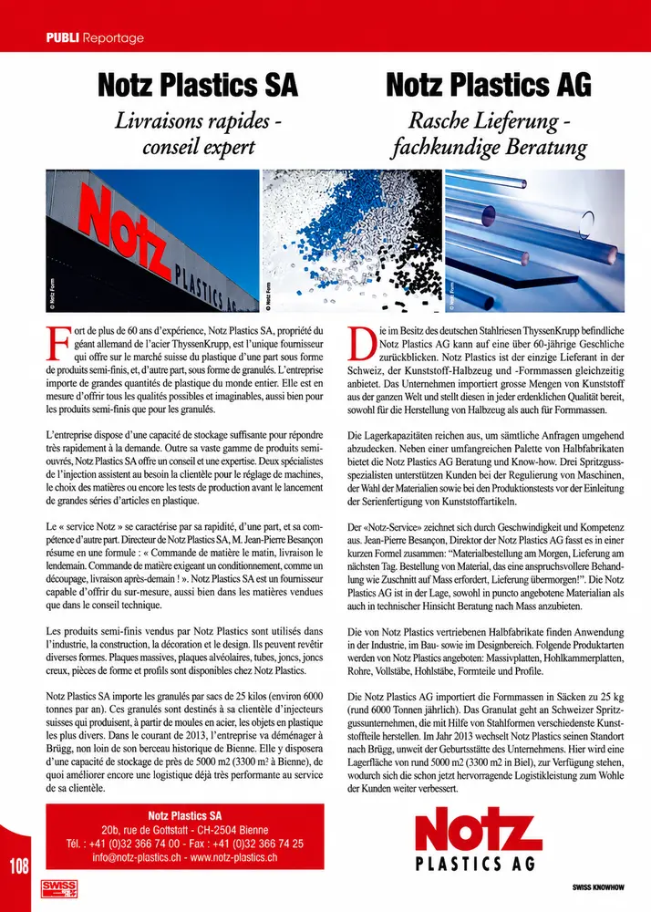
PublireportageNotz Plastics SA – Livraisons rapides – conseil expert
Notz Plastics AG – Rasche Lieferung – fachkundige Beratung
 Publireportage
PublireportagePärli AG, chauffage et sanitaire – Le partenaire pour tous les temps
Entretien avec M. Michel Pasche, directeur administratif
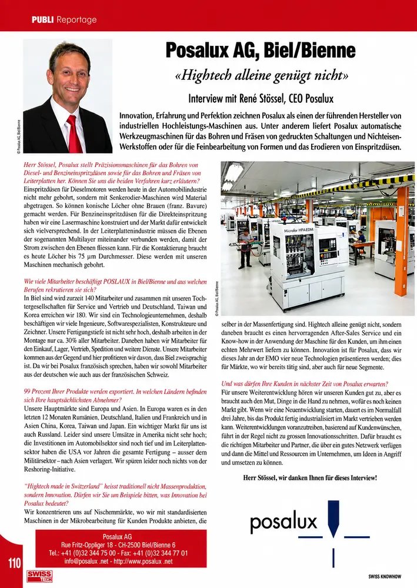
PublireportagePosalux AG, Biel/Bienne – «Hightech alleine genügt nicht»
Interview mit René Stössel, CEO Posalux / « Le high-tech ne se suffit pas à lui-même »
 Publireportage
PublireportageSWIP Saphirwerk Industrieprodukte AG, Brügg – «The Swiss Spirit of Precision»
Interview mit Thomas Jordi, Geschäftsleiter Saphirwerk / « L'esprit suisse de la précision »
 Publireportage
PublireportageVigier Beton Seeland Jura
Im Gespräch mit Erich Wälti, Unternehmensleiter / Entretien avec Erich Wälti, dirigeant de Vigier Beton Seeland Jura
Entreprises de ce numéro · 58

Adax SA
Décolletage de haute précision
Annax Schweiz AG / Annax Suisse S.A.
Systèmes d'information voyageurs pour le ferroviaire
arcjurassien.ch
Association intercantonale de développement régional
Association Ecoparc
Association – développement durable
Atelier für Direkte Demokratie / Atelier pour la démocratie directe
Atelier de réflexion et maison d'édition (démocratie directe)
bawaco ag
Ingénierie et construction d'installations pour l'industrie alimentaire liquide

Besançon électricité – Eric Besançon
Installations électriques
Bovard AG / Bovard SA
Conseils en brevets et en marques (propriété intellectuelle)
Canton de Berne – Délégation du Conseil-exécutif pour les affaires jurassiennes, Chancellerie d'État
Administration cantonale
Canton de Vaud – Département des Finances et des Relations extérieures, Office des Affaires extérieures
Administration cantonale – relations extérieures
CCI – Chambre de commerce et d'industrie du Doubs
Chambre consulaire (France)

Cendres+Métaux SA
Produits en métaux précieux, medtech et luxe
Commune de Sainte-Croix
Commune
District du Jura-Nord vaudois (Préfecture)
Administration publique – préfecture
Emch+Berger AG Bern
Ingénierie, planification et conseil (infrastructures)
Energie Service Biel/Bienne (ESB)
Services industriels – électricité, gaz, eau, télécommunications
Ernst & Young AG (Bern)
Audit, fiscalité, transactions et conseil
Fabrique de décolletage J. Baertschi SA
Décolletage de précision sur multibroches
Fafco S.A.
Accumulateurs de glace et capteurs solaires

Fondation Bartimée
Institution de traitement et de réinsertion des personnes dépendantes
Geotest AG / Geotest SA
Géologie, géotechnique, géophysique et environnement
Hôpital du Jura bernois SA
Hôpital régional
HRS Real Estate AG
Développement immobilier et entreprise totale
Itten+Brechbühl AG / SA
Architecture et planification générale

Klein AG
Aciers fins et métaux
Mairie de Pontarlier
Collectivité locale (France)
Manufacture Cartier Horlogerie
Manufacture horlogère intégrée
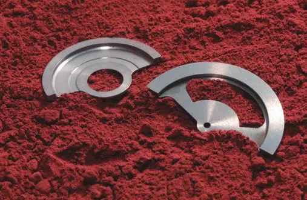
Meyer Sintermetall AG
Métallurgie des poudres et métal lourd fritté
Minnovarc – Innovation franco-suisse dans les microtechniques
Programme Interreg d'innovation
Montres Corum Sàrl
Haute horlogerie
Neroxis SA
Capteurs pour la qualité de l'eau et du gaz

NMS Bern
Ecole privée et formation des enseignants
Notz Plastics SA
Distribution de plastiques semi-finis et de granulés
OSTAJ – Observatoire statistique transfrontalier de l'Arc jurassien
Statistique publique transfrontalière
Parc naturel régional du Doubs (APNRD)
Parc naturel régional
Pärli AG
Technique du bâtiment – chauffage et sanitaire
Pays Horloger
Pays (collectivités territoriales françaises) – projet de PNR

Posalux SA
Machines-outils de micro-usinage
République et Canton de Neuchâtel – Département de l'économie, Office de promotion économique (OPEN)
Promotion économique cantonale
République et canton de Neuchâtel – Département de l'économie, Secrétariat général
Administration cantonale – économie
République et canton de Neuchâtel – Département de l'éducation, de la culture et des sports (DECS)
Administration cantonale – formation
République et canton du Jura – Département de la Formation, de la Culture et des Sports
Administration cantonale – formation
Réseau des villes de l'Arc jurassien (RVAJ)
Réseau intercommunal
Rêve Immob Sàrl
Immobilier – gérance, courtage, construction, promotion
SID – Services industriels de Delémont
Services industriels communaux (énergie, eaux)

Stadt Bern – Präsidialdirektion
Administration communale

Stadt Biel – Wirtschaft / Statistik
Administration communale
Standortförderung Kanton Bern (SF BE)
Promotion économique cantonale
SWIP Saphirwerk Industrieprodukte AG
Usinage de céramiques techniques, saphir et rubis
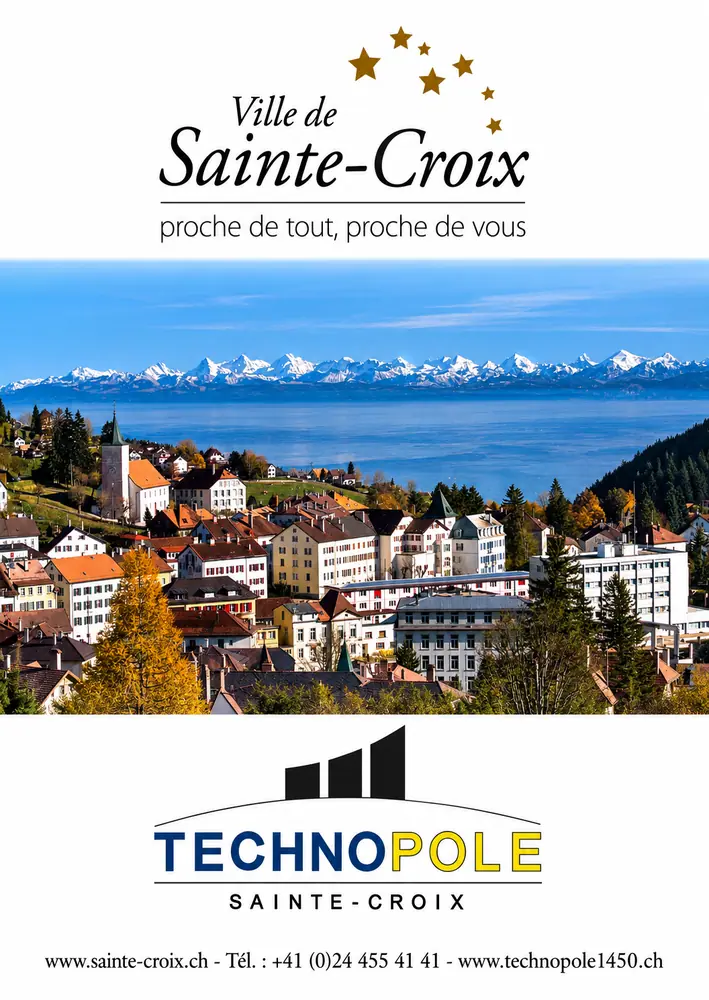
Technopole Sainte-Croix
Promotion économique – technopôle
Tiefbauamt der Stadt Bern (Office des ponts et chaussées de la ville de Berne)
Administration communale – génie civil et espace public
Université de Neuchâtel – Faculté de droit, Centre en aménagement du territoire et urbanisme
Enseignement supérieur et recherche
Vigier Beton Seeland Jura AG
Béton, granulats et recyclage de matériaux de construction
Ville d'Yverdon-les-Bains
Commune
Ville de La Chaux-de-Fonds – Service des relations régionales et des affaires extérieures
Commune
Voser Treuhand AG
Fiduciaire – comptabilité, fiscalité, assainissement
Wirtschaftskammer Biel-Seeland (WIBS) / Chambre économique Bienne-Seeland
Chambre économique régionale
Wirtschaftsraum Bern (Espace économique bernois)
Promotion économique régionale
Aucun résultat.